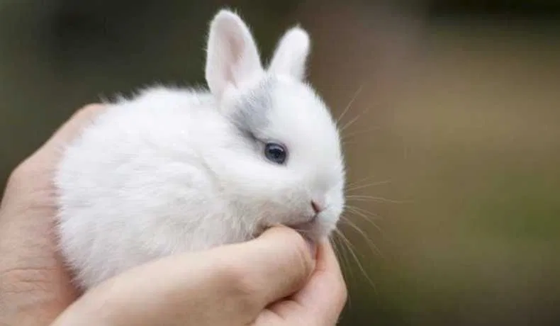

Введение
Текст пункта 1.1
Кро́лики — общее название нескольких родов млекопитающих из семейства зайцевых (в том числе и домашних кроликов). Русское название животного заимствовано из польского языка (пол. królik — букв. «королёк, маленький король»), в свою очередь, польская лексема является калькой с ср.-в.-нем. küniklîn (ср. нем. Kaninchen, диал. верх.-нем. Künigl, Königshase), восходящему к лат. cuniculus.
Кро́лики — общее название нескольких родов млекопитающих из семейства зайцевых (в том числе и домашних кроликов). Русское название животного заимствовано из польского языка (пол. królik — букв. «королёк, маленький король»), в свою очередь, польская лексема является калькой с ср.-в.-нем. küniklîn (ср. нем. Kaninchen, диал. верх.-нем. Künigl, Königshase), восходящему к лат. cuniculus.
Текст пункта 1.2